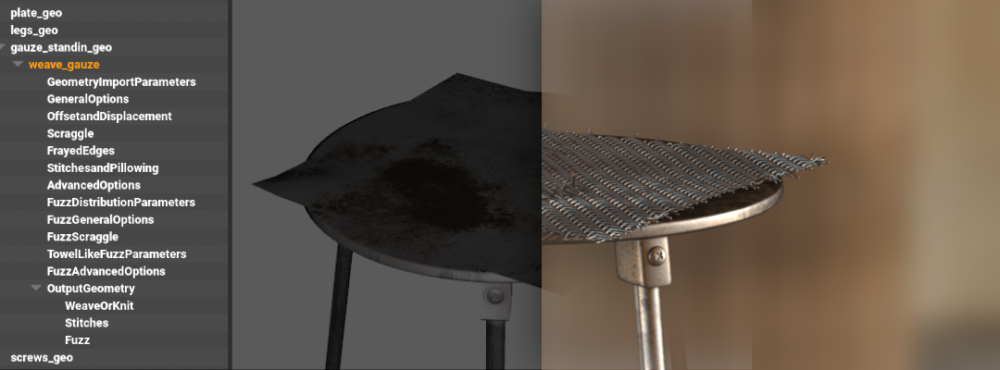

This document describes some of the USD concepts which we have removed to make the assets more universally compatible.
We replaced all URIs which we use in our assets with filepaths. Our asset resolver has a tiered plugin system, which allows us to resolve (and even mutate) URIs in multiple different ways. For example, the “STATE” in the URI can be overwritten easily so that a given process can switch between the “delivered” state of an asset and the “live/latest”.
subLayers = [
@ark:/JOB(al_template)/ASSETDIR(assets)/LIBRARY(entity)/ENTITY(furniture_workbench01)/DOMAIN(surfacing)/STATE(delivered)?version=15&extension=.usda:.usd:.usdc@,
@ark:/JOB(al_template)/ASSETDIR(assets)/LIBRARY(entity)/ENTITY(furniture_workbench01)/DOMAIN(modelling)/STATE(delivered)?version=14&extension=.usda:.usd:.usdc@
]
The AL Camera Schema provides many attributes in addition to the default camera schema:
ztl01060cameracachelayoutcamera01basecache_v004.usdc
burnIn_enabled
burnIn_frameInsetBotCinema
burnIn_frameInsetBotRender
burnIn_frameInsetLeftCinema
burnIn_frameInsetLeftRender
burnIn_frameInsetRightCinema
burnIn_frameInsetRightRender
burnIn_frameInsetTopCinema
burnIn_frameInsetTopRender
burnIn_hardCodedInnerRatio
burnIn_hardCodedOuterRatio
burnIn_innerRatio
burnIn_outerRatio
burnIn_showInsetCinema
burnIn_showInsetRender
burnIn_showTumbleLines
burnIn_showTumbleSquare
[...]
static const TfTokenVector distortAttrsTable[numModels] = {
// ClassicLDModel
{
AL_SchemasCommonTokens->al_distort_enabled,
AL_SchemasCommonTokens->al_distort_pin_edges,
AL_SchemasCommonTokens->al_distort_center_x,
AL_SchemasCommonTokens->al_distort_center_y,
AL_SchemasCommonTokens->al_distort_distortion,
AL_SchemasCommonTokens->al_distort_quartic_distortion,
AL_SchemasCommonTokens->al_distort_curvature_x,
AL_SchemasCommonTokens->al_distort_curvature_y,
AL_SchemasCommonTokens->al_distort_anamorphic_squeeze,
AL_SchemasCommonTokens->al_distort_auto,
AL_SchemasCommonTokens->al_distort_auto_gain,
AL_SchemasCommonTokens->al_distort_lens_breathing_multiply
},
// RadialStdDeg4
{
AL_SchemasCommonTokens->al_distort_enabled,
AL_SchemasCommonTokens->al_distort_pin_edges,
AL_SchemasCommonTokens->al_distort_dynamic_lens,
AL_SchemasCommonTokens->al_distort_center_x,
AL_SchemasCommonTokens->al_distort_center_y,
AL_SchemasCommonTokens->al_distort_distortion,
AL_SchemasCommonTokens->al_distort_u_deg2,
AL_SchemasCommonTokens->al_distort_v_deg2,
AL_SchemasCommonTokens->al_distort_quartic_distortion,
AL_SchemasCommonTokens->al_distort_u_deg4,
AL_SchemasCommonTokens->al_distort_v_deg4,
AL_SchemasCommonTokens->al_distort_phi_cylindric_dir,
AL_SchemasCommonTokens->al_distort_b_cylindric_bending
},
// AnamorphicStdDeg4
{
AL_SchemasCommonTokens->al_distort_enabled,
AL_SchemasCommonTokens->al_distort_pin_edges,
AL_SchemasCommonTokens->al_distort_dynamic_lens,
AL_SchemasCommonTokens->al_distort_center_x,
AL_SchemasCommonTokens->al_distort_center_y,
AL_SchemasCommonTokens->al_distort_cx02,
AL_SchemasCommonTokens->al_distort_cy02,
AL_SchemasCommonTokens->al_distort_cx22,
AL_SchemasCommonTokens->al_distort_cy22,
AL_SchemasCommonTokens->al_distort_cx04,
AL_SchemasCommonTokens->al_distort_cy04,
AL_SchemasCommonTokens->al_distort_cx24,
AL_SchemasCommonTokens->al_distort_cy24,
AL_SchemasCommonTokens->al_distort_cx44,
AL_SchemasCommonTokens->al_distort_cy44,
AL_SchemasCommonTokens->al_distort_lens_rotation,
AL_SchemasCommonTokens->al_distort_squeeze_x,
AL_SchemasCommonTokens->al_distort_squeeze_y
},
// AnamorphicDeg6
{
AL_SchemasCommonTokens->al_distort_enabled,
AL_SchemasCommonTokens->al_distort_pin_edges,
AL_SchemasCommonTokens->al_distort_dynamic_lens,
AL_SchemasCommonTokens->al_distort_center_x,
AL_SchemasCommonTokens->al_distort_center_y,
AL_SchemasCommonTokens->al_distort_cx02,
AL_SchemasCommonTokens->al_distort_cy02,
AL_SchemasCommonTokens->al_distort_cx22,
AL_SchemasCommonTokens->al_distort_cy22,
AL_SchemasCommonTokens->al_distort_cx04,
AL_SchemasCommonTokens->al_distort_cy04,
AL_SchemasCommonTokens->al_distort_cx24,
AL_SchemasCommonTokens->al_distort_cy24,
AL_SchemasCommonTokens->al_distort_cx44,
AL_SchemasCommonTokens->al_distort_cy44,
AL_SchemasCommonTokens->al_distort_cx06,
AL_SchemasCommonTokens->al_distort_cy06,
AL_SchemasCommonTokens->al_distort_cx26,
AL_SchemasCommonTokens->al_distort_cy26,
AL_SchemasCommonTokens->al_distort_cx46,
AL_SchemasCommonTokens->al_distort_cy46,
AL_SchemasCommonTokens->al_distort_cx66,
AL_SchemasCommonTokens->al_distort_cy66
},
// RadialFisheyeDeg8
{
AL_SchemasCommonTokens->al_distort_enabled,
AL_SchemasCommonTokens->al_distort_pin_edges,
AL_SchemasCommonTokens->al_distort_dynamic_lens,
AL_SchemasCommonTokens->al_distort_center_x,
AL_SchemasCommonTokens->al_distort_center_y,
AL_SchemasCommonTokens->al_distort_distortion,
AL_SchemasCommonTokens->al_distort_quartic_distortion,
AL_SchemasCommonTokens->al_distort_degree6,
AL_SchemasCommonTokens->al_distort_degree8
},
}
[...]
In addition to the Camera schema, we use other schemas for various use cases at Animal Logic. See below for a few more examples which we use with the “USD schema generator” (as outlined here).
class ALEditFrameRange "ALEditFrameRange" (
doc = "AL's FrameRange provided by the Edit department"
inherits = </Typed>
customData = {
string className = "EditFrameRange"
string fileName = "EditFrameRange"
}
)
{
int startHeadFrame = -1
int endTailFrame = -1
int headFrameCount = -1
int tailFrameCount = -1
int render:maxFrameCount = -1
int render:stepSize = -1
}
class "ALGlimpseCurveAPI"
(
inherits = </ALGlimpseObjectAPI>
customData = {
string apiSchemaType = "nonApplied"
string className = "GlimpseCurveAPI"
string fileName = "GlimpseCurveAPI"
string extraIncludes = """ """
}
)
{
token glimpse:curve:renderingMode = "hair" (
allowedTokens = ["hair", "sausages", "ribbon"]
customData = {
string apiName = "renderingMode"
}
)
token glimpse:curve:shadowMode = "opaque" (
allowedTokens = ["opaque", "transparent"]
customData = {
string apiName = "shadowMode"
}
)
int glimpse:curve:subdivision = 0 (
customData = {
string apiName = "curveSegmentsSubdiv"
}
)
float glimpse:curve:anisotropy = 0.0(
customData = {
string apiName = "normalsAnisotropy"
}
)
}

In the Animal Logic pipeline, we emit some procedural geometry straight into the renderer (glimpse) - cloth and fabric for example (“weave”).
The procedurals are defined in USD and the renderer translator instantiates them in the render scene. The procedural also receives a reference to the USD stage ID, to allow access to the completely composed data in the stage.
In the example below, you can see how the “weave” procedural is configured to read geometry from the prim “../../gauzestandingeo”. So when the renderer executes the procedural, the prim will be located in the stage and the procedural will emit the geometry “on” the gauze mesh in the correct location.
Note: We will replace the “relative path” string attribute with USD relationships soon.
def "weave_gauze" (
append references = @file://$WEAVE_SUBGRAPHS_PATH/WeaveHoudiniRenderProcedural.usda@
)
{
over "GeometryImportParameters"
{
string alf:param:primpathMesh = "../../gauze_standin_geo"
}
[...]
Glimpse is the in-house renderer at Animal Logic and we are currently transitioning from a bespoke material description language to USDShade.
The example which we provide still contains numerous issues which we are currently addressing, but nevertheless showcases a unique layered assignment mechanism, which is a key feature of Glimpse.
Layered assignments underpin two important workflows:
- Hierarchy based material layering to achieve effects such as rust and dirt
- Assignment hierarchy inferred contatenation of material inputs / outputs as “overrides”. This concept is similar to primvars as material input overrides, but the override values can be computed with shader graphs at render time.
over "GEO"
{
rel material:binding:preview = </root/MATERIAL/usdpreviewsurface1>
custom rel material:slotBinding:_010 = </root/MATERIAL/generic01>
over "spool_M_geo"
{
custom rel material:slotBinding:_000 = </root/MATERIAL/multimetal01>
custom rel material:slotBinding:_010:_:_000 = </root/MATERIAL/generic01_override>
}
over "innerWire_M_geo"
{
custom rel material:slotBinding:_000:_:_000 = </root/MATERIAL/generic01_override>
}
over "wire_M_geo"
{
custom rel material:slotBinding:_000:_:_000 = </root/MATERIAL/generic01_override>
}
}
We use a custom schema call ALMayaReference to reference maya data. When shot building tools encounter such a prim during stage traversal,
they will create a maya reference to the given file. We use this mainly for rigs and rig motion.
def ALMayaReference "rig"
{
asset mayaReference = @rigs/cache.mb@
}
We have extended the ptex format slightly to be able to set a per mesh “face index offset”. This allows us to use single ptex files for multiple mesh prims, even if they have overlapping face indexes. Our pipeline will “bake’ certain information (such as “occlusion”) into ptex files and author a corresponding USD layer with the attributes:
def "root"
{
string primvars:glimpse:userData:asset_channels_bakeTexture = "ark:/JOB(al_template)/ASSETDIR(assets)/LIBRARY(fragment)/FRAGTYPE(geo)/DOMAIN(modelling)/FRAGMENT(furniture_workbench01)/TECHVAR(baked_data)/ASSET(texture)?version=13&path=asset_channels_bake.ptx"
string primvars:glimpse:userData:asset_occlusion_bakeTexture = "ark:/JOB(al_template)/ASSETDIR(assets)/LIBRARY(fragment)/FRAGTYPE(geo)/DOMAIN(modelling)/FRAGMENT(furniture_workbench01)/TECHVAR(baked_data)/ASSET(texture)?version=13&path=asset_occlusion_bake.ptx"
over "GEO"
{
over "glassPane_geo"
{
int primvars:glimpse:userData:ptexFaceIndexOffset = 0
}
over "skirting_geo"
{
int primvars:glimpse:userData:ptexFaceIndexOffset = 150
}
over "toekicker_geo"
{
int primvars:glimpse:userData:ptexFaceIndexOffset = 472
}
over "counter_geo"
{
int primvars:glimpse:userData:ptexFaceIndexOffset = 1094
}
[...]
Variant Fallbacks provide a convinient mechanism to define which variants various departments should “see” when loading USD files. Keep in mind that you can set variant fallbacks via pluginInfo.json files (+environment variables) or as static attributes on stage objects before you load layers into them. This means that you can have company/show/department/shot specific fallbacks. Below is an excerpt of some of our fallbacks:
{
"Plugins": [
{
"Type": "resource",
"Name": "ALUsdVariantFallbacks",
"Info": {
"UsdVariantFallbacks": {
"alfro": ["render"],
"weave": ["render"],
"spawn": ["render"],
"spruce": ["render"],
"quill": ["render"],
"geocache": ["animfinal_render_high", "animbase_render_high"],
"geo": ["render_high", "display_high"],
[...]
"simrig": ["shot", "global"],
"simcontrol": ["shot", "global"],
"simdata": ["shot", "global"]
}
}
}
]
}
Models are organised into ‘Model Hierarchies’ (groups & assemblies).
Be aware that there is a fairly strict “grammar” in USD which needs to be adhered to when you set up your model hierarchy. If you break it (parent an assembly under a component), the modelAPI won’t function as expected (ie, drawmode won’t work etc). In addition, it is important not to use unregistered kinds (although the API allows that).
To register custom kinds in your pipeline, define them in a pluginInfo.json. This is an excerpt of the one we use at Animal Logic:
{
"Plugins": [
{
"Info": {
# Any modification to this file should be reflected in the file used
# to generate the c++ tokens.
"Kinds": {
"scene": {
"baseKind": "assembly"
},
"shot": {
"baseKind": "assembly"
},
...
"environment": {
"baseKind": "assembly"
},
"character_asmb": {
"baseKind": "assembly"
},
"crowd_asmb": {
"baseKind": "assembly"
},
...
"part": {
"baseKind": "component"
},
"setpiece": {
"baseKind": "component"
},
"camera": {
"baseKind": "component"
},
"lightrig": {
"baseKind": "component"
},
...
}
},
...
]
}